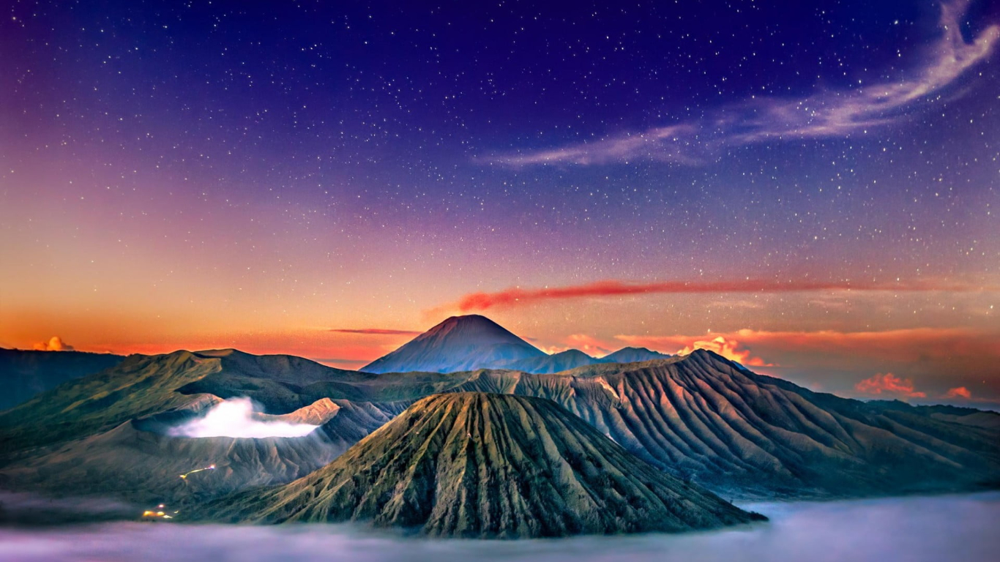

Gunung Bromo
Dalam bahasa Tengger dieja "Brama", juga disebut Kaldera Tengger, adalah sebuah gunung berapi aktif di Jawa Timur, Indonesia. Gunung ini memiliki ketinggian 2.329 meter di atas permukaan laut dan berada dalam empat wilayah kabupaten, yakni Kabupaten Probolinggo, Kabupaten Pasuruan, Kabupaten Lumajang, dan Kabupaten Malang. Gunung Bromo terkenal sebagai objek wisata utama di Jawa Timur. Sebagai sebuah objek wisata, Bromo menjadi menarik karena statusnya sebagai gunung berapi yang masih aktif. Gunung Bromo termasuk dalam kawasan Taman Nasional Bromo Tengger Semeru.>
Nama Bromo berasal dari nama dewa utama dalam agama Hindu, Brahma.
Bentuk tubuh Gunung Bromo bertautan antara lembah dan ngarai dengan kaldera atau lautan pasir seluas sekitar 10 kilometer persegi, Ia mempunyai sebuah kawah dengan garis tengah ± 800 meter (utara-selatan) dan ± 600 meter (timur-barat). Sedangkan daerah bahayanya berupa lingkaran dengan jari-jari 4 km dari pusat kawah Bromo.

Sejarah letusan Gunung Bromo
Selama abad 20 dan abad 21, Gunung Bromo telah meletus sebanyak beberapa kali, dengan interval waktu yang teratur, yaitu 30 tahun. Letusan terbesar terjadi 1974, sedangkan letusan terakhir terjadi pada 19 Juli 2019.
Bromo sebagai gunung suci
Bagi penduduk sekitar Gunung Bromo, suku Tengger, Gunung Bromo/Gunung Brahma dipercaya sebagai gunung suci. Setiap setahun sekali masyarakat Tengger mengadakan upacara Yadnya Kasada atau Kasodo. Upacara ini bertempat di sebuah pura yang berada di bawah kaki Gunung Bromo dan dilanjutkan ke puncak Bromo. Upacara diadakan pada tengah malam hingga dini hari setiap bulan purnama sekitar tanggal 14 atau 15 pada bulan Kasodo (kesepuluh) menurut penanggalan Jawa.
Spot wisata Unggulan di Bromo
Ada beberapa destinasi wisata di Bromo yang menjadi tujuan utama wisatawan ke Bromo. Tidak hanya sunrise Bromo saja yang terkenal, melainkan ada beberapa destinasi yang disukai wisatawan yaitu;
- 1. Penanjakan 1
- 2. Bukit Kingkong
- 3. Bukit Cinta
- 4. Seruni Point
- 5. Lembah Widodaren
- 6. Kawah Bromo
- 7. Gunung Batok
- 8. Pura Luhur
- 9. Pasir Berbisik
*Catatan Gunung Bromo merupakan gunung yang masih aktif
Berhati hatilah
Itulah artitekl terkait dengan dengan Gunung Bromo yang kami sajikan, gimana sobat apakah atikel ini membantu menambah wawasan kalian mengenai gunung bromo, kalau iya jangan lupa bagikan postingan ini kepada teman kalian, terima kasih.